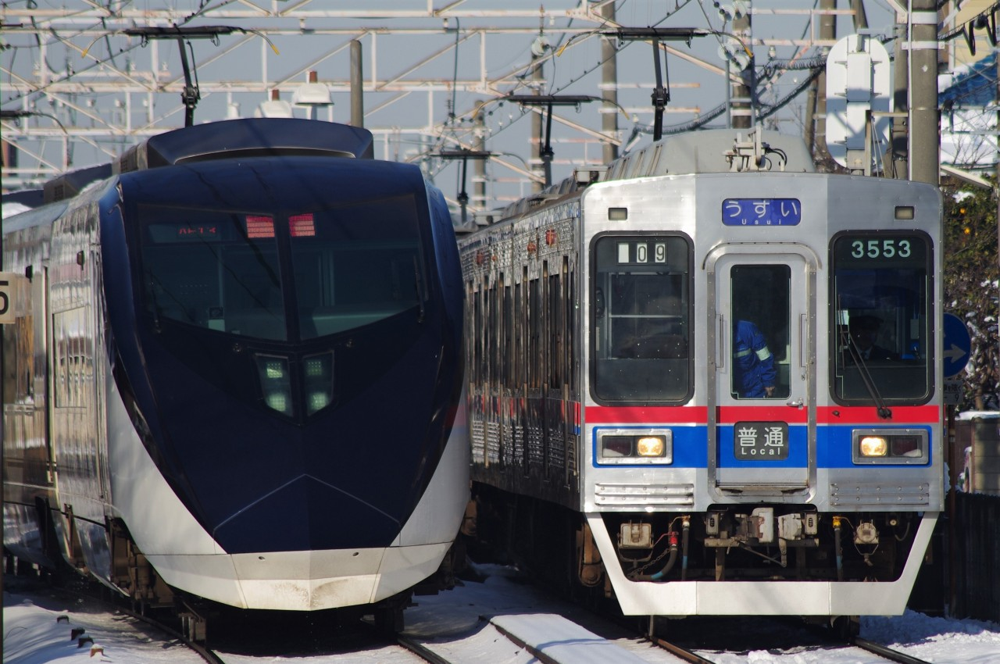

京成電鉄

京成電鉄は東京・千葉に路線を持つ大手私鉄であり、本線、押上線、金町線、千葉線、千原線、東成田線、成田空港線の計7路線を持ち、営業運転が行われている。
都営浅草線、京浜急行電鉄、北総鉄道、芝山鉄道、新京成電鉄との直通運転が行われおり、複雑な運行形態を成していることが特徴的である。
京成電鉄は1907年に押上～成田間の軌道敷設特許を得て、会社が設立されたことに始まる。社名の「京成」は東京と成田を結ぶことを目的としたことに由来する。
2010年には、北総線を成田空港まで延伸する形で成田空港線印旛日本医大～空港第2ビル間が開業し、空港アクセス列車であるスカイライナーでは在来線最速の160km/h運転が行われている。
2019年のダイヤ改正ではスカイライナーが毎時3本へと増発された。本線経由時代には考えられなかった快進撃だろう。
本ページでは直通運転を行っている車両や路線についても取り上げていく。